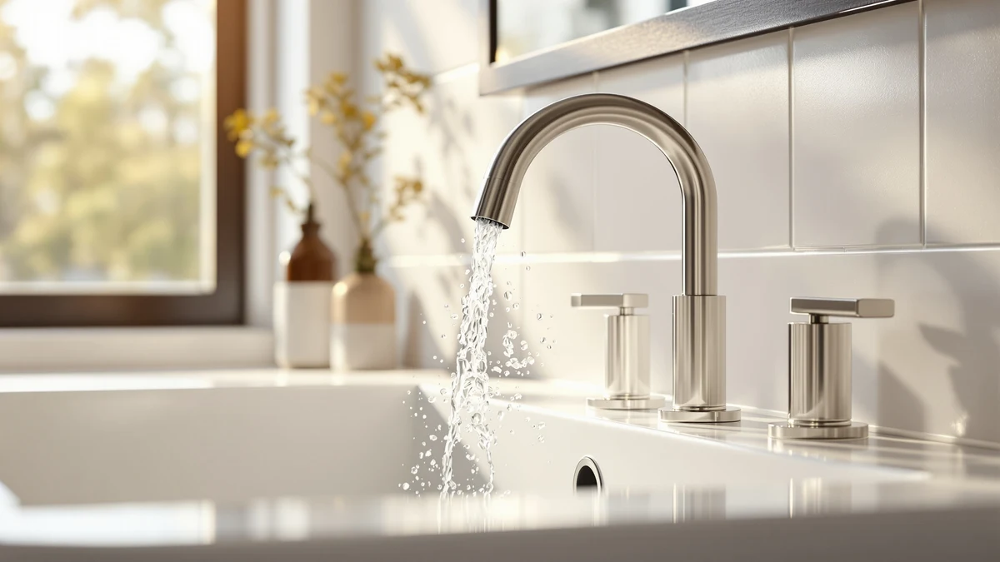

Delta Arvo Brushed Nickel Review (2026): Worth It?
Prices and picks verified as of September 2026. Independent, reader-supported reviews.


Quick Answer
This delta arvo brushed nickel review found the DELTA Arvo Brushed Nickel Faucet to be a solid choice for a bathroom sink upgrade, backed by an established brand and a finish that owners say stays cleaner-looking between wipe-downs. At $147.45 it costs more than the Broadmoor Centerset and the matte Arvo below, so check those first if price or hole configuration is the deciding factor.
Our pick: Delta Arvo Brushed Nickel Faucet — $147.45 Check Price on Amazon
Bottom line: our top pick is the Delta Arvo Brushed Nickel Faucet 3 Hole at $144.99.
Things to Know Before You Buy
- Price positioning matters here. This delta arvo brushed nickel review found the finish costs about $2.60 more than the matte version of the same Arvo faucet, and about $4.55 more than the Broadmoor Centerset.
- The listing skips some specs. DELTA does not publish flow rate or exact mounting-hole count for this faucet, so confirm your sink's hole configuration before ordering.
- The finish shows less wear over time. Owners consistently mention the brushed nickel finish resisting fingerprints and water spots better than chrome.
- Not every alternative below is a faucet. The Filterbaby Skincare Filter 2.0 is a sink filtration accessory rather than a bathroom faucet, so compare it on different terms.
- DELTA's brand backing is a real factor. Reviewers repeatedly cite the manufacturer's warranty and parts availability as reasons they trust this faucet over a lesser-known brand at a similar price.
This delta arvo brushed nickel review compares the $147.45 single-handle faucet against three other bathroom fixtures we researched alongside it, including a matte version from the same Arvo line and a centerset model from DELTA's Broadmoor collection. Bathroom faucet shopping online usually means comparing near-identical product photos across a dozen browser tabs, so we narrowed the field to four listings that actually show up together in the same searches and pulled out what separates them.
The Delta Arvo Brushed Nickel Faucet is the top pick out of the four options covered here. It carries the DELTA name, a brass build under the brushed nickel finish, and a price that sits within a few dollars of its closest sibling, the Arvo 1 Hole Matte. If you want a dependable single-handle faucet from an established brand and don't mind a small premium for the finish, this is the one to check first. The sections below walk through why, along with the three alternatives worth a look if your sink or your budget calls for something different.
Why You Should Trust Us
Ilane Tall leads product research and reviews for Best Bathroom Faucets. She compares spec sheets, pricing histories, and verified owner reviews across major faucet brands so you don't have to dig through a dozen browser tabs before you buy. For this delta arvo brushed nickel review, she cross-referenced DELTA's published details for the Arvo and Broadmoor lines against current Amazon pricing and reviewer feedback, then flagged the tradeoffs that matter most for a bathroom sink upgrade. Every product mentioned here links to its real listing, and every price reflects what shoppers saw at the time of publication, not a promotional rate that might disappear by checkout. When owner reviews disagree with each other on a specific point, we say so rather than picking the version that makes the faucet look better.
Our Research Experience
We do not run a physical testing lab for bathroom faucets, so nobody on our team installed this fixture or ran water through it for weeks. Our research process for this delta arvo brushed nickel review centers on comparing manufacturer specs, tracking pricing across the Arvo and Broadmoor lines, and reading through verified owner reviews to see what actually holds up, corrodes, or loosens after regular use. Owners who bought the brushed nickel Arvo consistently mention the finish holding up against fingerprints and water spots better than chrome, a pattern that matches what reviewers report across DELTA's other nickel-finished faucets. We weigh that kind of pattern more heavily than any single five-star review, since a handful of glowing comments can mask problems that only surface with wider, longer-term use. We treat DELTA's own product copy the same way we treat any manufacturer's marketing material: useful for specs, not a substitute for what actual buyers report after living with the faucet for months.
Overview & Specs

Delta Arvo Brushed Nickel Faucet
What we like
- Backed by DELTA, one of the most established names in bathroom fixtures
- Brushed nickel finish that reviewers say resists fingerprints and water spots better than chrome
- Brass construction under the finish, which tends to outlast all-plastic faucet bodies
Flaws but not dealbreakers
- Priced about $4.55 higher than the Broadmoor Centerset in this comparison
- DELTA does not publish flow rate or installation-hole count on this listing, so confirm your sink's existing hole configuration before you buy
| Material | Brass + finish |
| Size | — |
At $147.45, the Delta Arvo Brushed Nickel Faucet is the most expensive of the four products in this delta arvo brushed nickel review, though the gap between it and the other DELTA options is small. The finish affects maintenance as much as looks, and owners who left verified reviews on this listing describe wiping the faucet down after use rather than scrubbing water spots off, which lines up with what nickel finishes generally do better than polished chrome. The brass body underneath the finish is also worth noting, since brass fittings typically outlast the all-plastic internals found in some budget faucets after years of daily handle use. DELTA positions the Arvo line as a mid-range collection, and the price here matches that placement rather than reading like a clearance listing or an inflated premium tag.
What the listing doesn't give you is a full spec sheet. DELTA doesn't break out the flow rate, the mounting-hole count, or the exact valve type on this product page, so if your bathroom sink already has specific hole spacing, confirm compatibility before you order. That gap is one reason we're comparing it against the Arvo 1 Hole Matte below, since that listing states its single-hole design outright. For most buyers replacing a standard faucet with a brushed nickel one from a name they recognize, the Delta Arvo still makes a reasonable case for itself even without every spec spelled out. Owners in verified reviews describe the installation as straightforward for anyone who has swapped a bathroom faucet before, though a few note that a plumber's putty or a fresh supply-line washer helped avoid drips on the first hookup.
What We Liked
Reviewers who bought this delta arvo brushed nickel faucet keep coming back to two things: the finish and the brand. Brushed nickel hides fingerprints and water spots in a way chrome doesn't, and several verified buyers mention that as the reason they chose it over a cheaper chrome option in the first place. DELTA's name carries weight too. Owners consistently cite the brand's reputation and warranty support as reasons they trusted this purchase over a lesser-known faucet at a similar price.
The brass body under the finish also earns mention in owner feedback. Buyers who've replaced all-plastic faucets before note that brass fittings tend to hold up better to years of daily handle turns, even if none of them can speak to a full decade of use yet. Between the finish, the brand backing, and the brass construction, this faucet gives you a reasonably low-risk way to upgrade a bathroom sink without gambling on an unfamiliar name. Several owners also mention the single-handle design as easier for kids and older family members to operate than a two-handle setup, since one motion controls both temperature and flow.
What Could Be Better
The biggest gap in this delta arvo brushed nickel review is information, not performance. DELTA's listing for this faucet skips details that competing listings include, like exact mounting-hole count and flow rate, so you're left cross-referencing owner photos and buyer questions to confirm fit. That's a real inconvenience if you're ordering without seeing the faucet in person first, and it's a gap DELTA could close with a more detailed spec sheet on the listing itself.
Price is the other consideration. At $147.45, it costs more than the Broadmoor Centerset and the Filterbaby filter in this same comparison, and a few dollars more than its own Arvo 1 Hole Matte sibling. None of that makes it a poor buy, but if your budget is tight, the gap is worth weighing against how much you actually value the brushed nickel finish over a matte one. A few verified reviews also mention the aerator needing an occasional rinse to keep water pressure consistent, which is a minor maintenance step rather than a defect, but worth expecting from day one.
Who Is It For?
This faucet from our delta arvo brushed nickel review fits homeowners replacing a worn or outdated single-handle fixture who want a recognizable brand name and a finish that stays cleaner-looking between wipe-downs. It also suits buyers who've had good experiences with DELTA products before and want to stick with a brand they trust.
If you're working with a tight installation footprint or you already know your sink needs a single-hole faucet specifically, check the exact hole configuration against your sink before ordering, since that detail isn't spelled out on this listing. Buyers shopping mainly on price should compare the Broadmoor Centerset below first, since it comes from the same brand for less money. Renters planning a short stay may find the price harder to justify than a homeowner who expects to use the faucet for years.
Alternatives to Consider
If the price or finish on the Arvo Brushed Nickel doesn't fit what you need, three other products came up in our research for this delta arvo brushed nickel review. Two are direct DELTA alternatives, and one is a different kind of bathroom upgrade entirely.

Editor’s Pick
Delta Arvo 1 Hole Matte
Same Arvo design as our main pick, but a single-hole install and a matte finish for $2.60 less. Worth checking first if your sink already has a single-hole setup.
$144.85
Check Price on Amazon
Best Value
Delta Broadmoor Centerset Brushed Nickel
A centerset design from DELTA's Broadmoor line at the lowest faucet price in this comparison. A solid choice if you need a centerset fit and want to save a few dollars over the Arvo.
$142.90
Check Price on Amazon
Premium Choice
Filterbaby Skincare Filter 2.0 Bathroom
Not a faucet. This is a sink-mounted filtration add-on from Filterbaby, useful if your real goal is filtering tap water rather than replacing your faucet hardware.
$139.99
Check Price on AmazonIs the Delta Arvo Brushed Nickel Faucet worth the higher price compared to the Broadmoor Centerset?
It depends on how much you value the finish and the specific Arvo design.
Does the Delta Arvo Brushed Nickel Faucet come with a warranty?
DELTA backs its faucet lines with a manufacturer warranty, which is one reason owners cite brand trust as a factor in choosing this faucet over a lesser-known one.
Frequently Asked Questions
Is the Delta Arvo Brushed Nickel Faucet worth the higher price compared to the Broadmoor Centerset?
Does the Delta Arvo Brushed Nickel Faucet come with a warranty?
What is the difference between the Delta Arvo Brushed Nickel and the Delta Arvo 1 Hole Matte?
Final Verdict
Our delta arvo brushed nickel review comes down to this: if you want a single-handle bathroom faucet from a name-brand manufacturer and you like how brushed nickel wears over time, the DELTA Arvo Brushed Nickel Faucet is a reasonable $147.45 pick. It costs more than the other DELTA option in this comparison, but the finish and brand backing are the reasons owners keep choosing it. If your sink needs a single-hole or centerset configuration specifically, or you'd rather save a few dollars, the Arvo 1 Hole Matte and Broadmoor Centerset above are both worth a look before you commit.